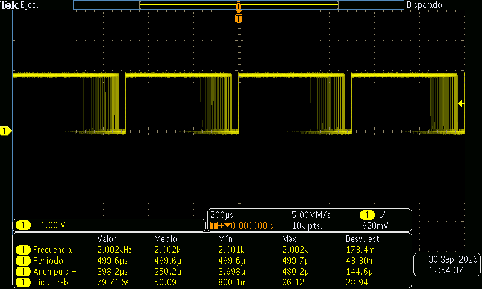
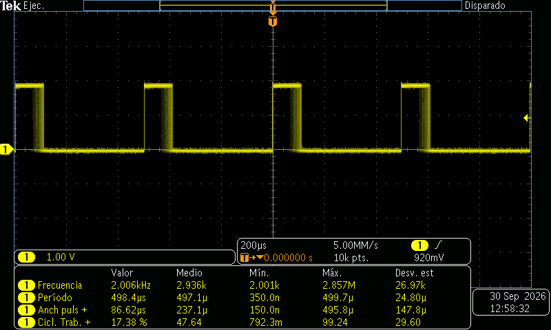
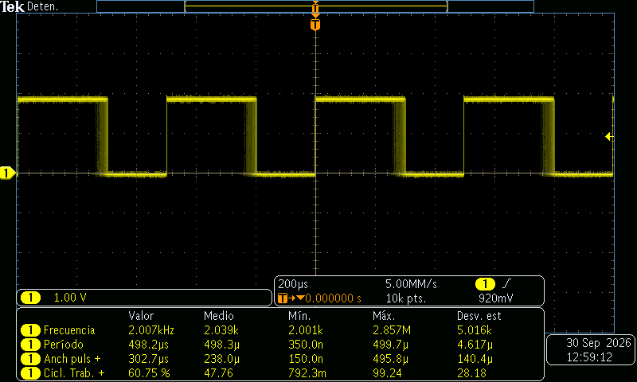
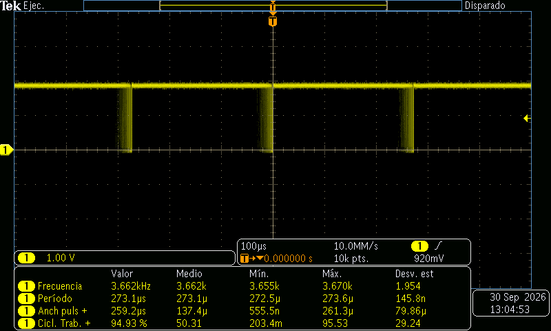
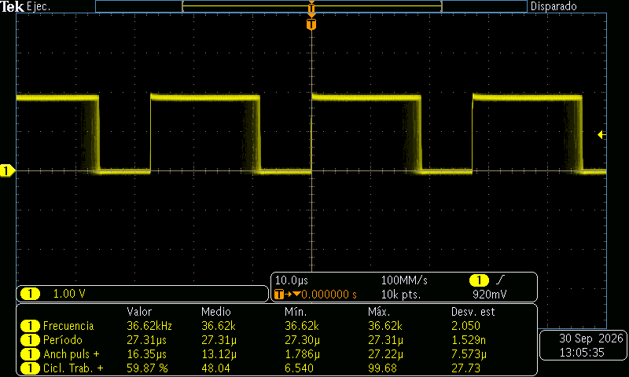
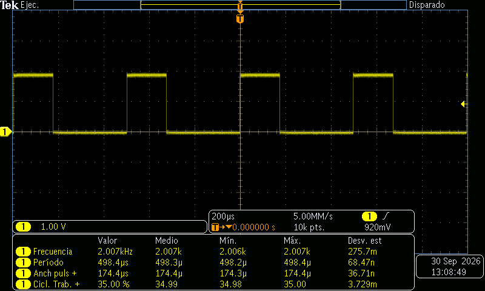
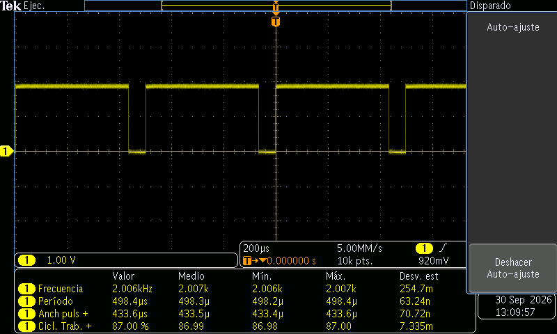
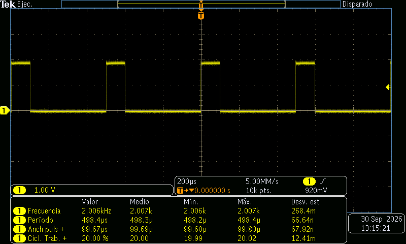
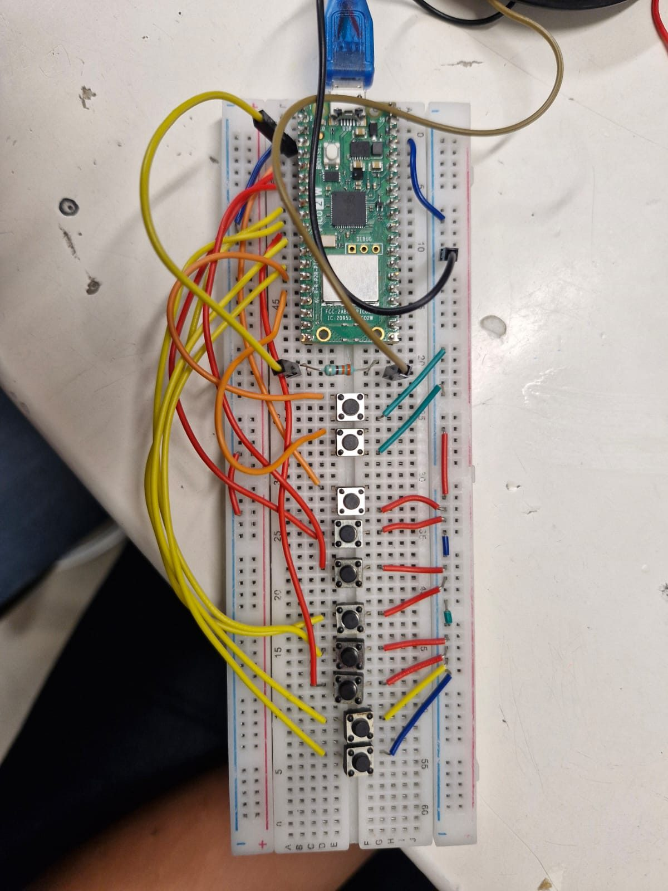

PWM — LED Fade, Clock Divider and an 8-Key Piano (Predict vs Measure)
Goal (one sentence): Predict a PWM signal's frequency and duty from clk_sys, the clock divider and TOP and check it on the oscilloscope (Part 1, LED), then use the same formula backwards to play notes on a speaker with an 8-key PWM piano (Part 2).
Part 1 — LED Fade, Clock Divider and Fixed Duty
Prediction
A PWM slice counts 0 … TOP at clk_sys / div, so:
f_PWM = f_clk / (div · (TOP + 1))duty = level / (TOP + 1)+W = duty · T- Course example (
F_PWM_HZ = 2000,TOP = 1023,f_clk = 150 MHz):div = 150 MHz / (2000 · 1024) = 73.24→ f = 2.000 kHz, T = 500.0 µs DIV_10(div = 10,TOP = 4095):150 MHz / (10 · 4096)→ f = 3.662 kHz, T = 273.1 µsDIV_1(div = 1,TOP = 4095):150 MHz / (1 · 4096)→ f = 36.62 kHz, T = 27.31 µs- Fixed duty at 2 kHz,
TOP = 1023: 35 % →+W ≈ 175 µs, 87 % →+W ≈ 435 µs, 20 % →+W ≈ 100 µs - Fade (
step = 8,sleep_ms(5)): the level sweeps 0 → TOP → 0 like a triangle, so a random scope snapshot sees a roughly uniform duty between 0 and 100 %: mean ≈ 50 %, σ ≈ 100 / √12 = 28.9 %. Ramp time ≈(TOP / 8) · 5 ms= 0.64 s forTOP = 1023(2.56 s forTOP = 4095).
Setup
- Pin map:
LED_PIN= GP2 → LED (with series resistor) and scope CH1; scope ground → a Pico GND pin. - Photo of the breadboard: not taken this session (Pico 2 W, one LED on GP2, probe on GP2 / GND).
- Non-default: none. Default 150 MHz
clk_sys. Scope at 5 MS/s (200 µs/div) for the 2 kHz runs, 10 MS/s and 100 MS/s for the faster ones; 10k points, trigger on CH1 rising edge at 920 mV.
What I did
- Flashed the course
pwm_led.c(fade, 2 kHz,TOP = 1023) and probed GP2 at 200 µs/div with Frequency / Period / +Width / Duty measurements → E1–E3. - Did the divider math by hand with a calculator and left it as an integer (
div = 73instead of 73.24), reflashed and measured again → E2, E3. - Changed
TOPto 4095 and set the divider to 10 (DIV_10), then to 1 (DIV_1), keeping the fade → E4, E5. - Went back to 2 kHz (
TOP = 1023,div = 73), turned the fade off and wrote a fixed level for 35 %, 87 % and 20 % duty → E6–E8. - Compared every
Value/Meanreading with the formula above.
Evidence
| # | File | What it shows | Cursor / measured value |
|---|---|---|---|
| E1 | img/pwm_scope1.png |
Course code as-is, fade running (smeared falling edge = changing duty) | f = 2.002 kHz, T = 499.6 µs, duty mean 50.09 %, σ 28.94 %, min +W 3.998 µs |
| E2 | img/pwm_scope2.png |
Fade, integer divider 73 (calculator value) | f = 2.006 kHz, T = 498.4 µs, duty mean 47.64 %, σ 29.60 % — Min T = 350 ns / Max f = 2.857 MHz (bad stats) |
| E3 | img/pwm_scope3.png |
Same as E2, acquisition stopped (single frame) | f = 2.007 kHz, T = 498.2 µs, duty 60.75 % (snapshot), mean 47.76 %, σ 28.18 % |
| E4 | img/pwm_scope4.png |
DIV_10, TOP = 4095, fade, 100 µs/div |
f = 3.662 kHz, T = 273.1 µs, mean 50.31 %, σ 29.24 % |
| E5 | img/pwm_scope5.png |
DIV_1, TOP = 4095, fade, 10 µs/div |
f = 36.62 kHz, T = 27.31 µs, mean 48.04 %, σ 27.73 % |
| E6 | img/pwm_scope6.png |
Fixed duty 35 % | f = 2.007 kHz, T = 498.4 µs, +W = 174.4 µs, duty = 35.00 % |
| E7 | img/pwm_scope7.png |
Fixed duty 87 % | f = 2.006 kHz, T = 498.4 µs, +W = 433.6 µs, duty = 87.00 % |
| E8 | img/pwm_scope8.png |
Fixed duty 20 % | f = 2.006 kHz, T = 498.4 µs, +W = 99.67 µs, duty = 20.00 % |








Predicted vs measured
| Quantity | Predicted | Measured (evidence #) | Error % | Why the difference |
|---|---|---|---|---|
| f, course code (div 73.24) | 2.000 kHz | 2.002 kHz (E1) | +0.10 % | Divider is stored as 8.4 fixed point: 73.24 → 73 + 3/16 = 73.1875 → 2.0015 kHz |
| T, course code | 500.0 µs | 499.6 µs (E1) | −0.08 % | Same as above (73.1875 · 1024 / 150 MHz = 499.6 µs) |
f, 2 kHz runs E2–E8 (div = 73) |
2.000 kHz (target) / 2.0066 kHz (with div 73) | 2.006–2.007 kHz | +0.33 % vs target / 0.00 % vs div 73 | We rounded 73.24 down to the integer 73 by hand: 150 MHz / (73 · 1024) = 2.0066 kHz |
f, DIV_10 |
3.662 kHz | 3.662 kHz (E4) | 0.00 % | Integer divider, exact |
f, DIV_1 |
36.62 kHz | 36.62 kHz (E5) | 0.00 % | Integer divider, exact |
T, DIV_1 |
27.31 µs | 27.31 µs (E5) | 0.00 % | σ(T) = 1.5 ns → crystal-locked, no jitter like the timer callback |
| +W at 35 % | 174.2 µs (level 358, div 73) | 174.4 µs (E6) | +0.1 % | 1 sample = 200 ns at 5 MS/s; level 358/1024 = 34.96 % |
| +W at 87 % | 433.6 µs (level 891, div 73) | 433.6 µs (E7) | 0.00 % | 891/1024 = 87.01 % |
| +W at 20 % | 99.77 µs (level 205, div 73) | 99.67 µs (E8) | −0.1 % | Half a sample; edge interpolation |
| Fade: mean duty | 50 % | 47.6–50.3 % (E1–E5) | ≤ −4.7 % | Finite number of captures of a triangle; it settles near 50 % the longer it runs |
| Fade: σ duty | 28.9 % | 27.7–29.6 % (E1–E5) | ±4 % | Same; a uniform 0–100 % distribution has σ = 28.87 % |
| Fade: min +W | 3.89 µs (level 8, first step) | 3.998 µs (E1) | +2.7 % | First non-zero level is step = 8; ~1 sample of rounding |
Conclusion: f = f_clk / (div · (TOP + 1)) predicted every frequency to within the divider's fractional resolution, and duty = level / (TOP + 1) gave the fixed duties to within one scope sample. Lowering the divider ×10 multiplies the frequency ×10 (E4 → E5) without changing the duty behavior; TOP trades frequency for resolution.
What went wrong
- 2.002 / 2.007 kHz instead of 2.000 kHz: the prediction said exactly 2 kHz, but E1 reads 2.002 kHz and the later runs 2.006–2.007 kHz. Two causes, both in the divider:
- With the course float (E1): the RP2350 stores the divider as 8 integer + 4 fractional bits (steps of 1/16), and
pwm_set_clkdiv()truncates the float, so 73.24 becomes 73.1875 → 2001.5 Hz. - With our calculator value (E2–E8): we did the math by hand and left the divider as the integer 73, dropping the 0.24 → 150 MHz / (73 · 1024) = 2006.6 Hz, i.e. +0.33 %. The scope matched the divider we actually wrote, not the 2 kHz we wanted.
- Fix: pick
TOPanddivso the divider is exact — e.g.TOP = 999,div = 75→ 150 MHz / (75 · 1000) = exactly 2000 Hz — or compute the real frequency from the stored divider instead of the requested one.
- With the course float (E1): the RP2350 stores the divider as 8 integer + 4 fractional bits (steps of 1/16), and
- Polluted statistics: E2/E3 show Min period = 350 ns and Max frequency = 2.857 MHz, which are impossible for a 2 kHz PWM. They came from glitches while reflashing / reconnecting the probe, and the statistics were never reset. We trusted only the
ValueandMeancolumns; next time press Reset Statistics after the signal settles. - "Value" duty means nothing during the fade: E1–E5 show duties of 17 %, 60 %, 79 %, 95 %… depending on when the snapshot was taken. For the fade, the useful numbers are Mean (≈ 50 %) and Std Dev (≈ 28.9 %), not
Value.
Code
#define TOP 1023 // 10-bit (4095 for DIV_10 / DIV_1)
float div = 150000000.0f / (F_PWM_HZ * (TOP + 1)); // 73.24 ...
pwm_set_clkdiv(slice, div); // E1: HW keeps 73 + 3/16 -> 2.0015 kHz, not 2.000
pwm_set_clkdiv(slice, 73.0f); // E2-E8: calculator value, integer -> 2.0066 kHz
pwm_set_wrap(slice, TOP);
// exact 2 kHz alternative: pwm_set_wrap(slice, 999); pwm_set_clkdiv(slice, 75.0f);
// fixed duty: level = round(DUTY_PCT * (TOP + 1) / 100) -> 20 % = 205
pwm_set_chan_level(slice, chan, level);
pwm_set_enabled(slice, true);
Full file at src/pwm/pwm_led.c (reconstructed from the course pwm_led.c after the session with the integer dividers we used; the exact lab file was not saved).
Part 2 — 8-Key PWM Piano
Divider per note
Same formula as Part 1, solved for the divider: div = f_clk / (f_note · (TOP + 1)), with f_clk = clock_get_hz(clk_sys) = 150 MHz and TOP = 1023. The hardware keeps the divider in steps of 1/16, so the note that comes out is 150 MHz / (⌊16·div⌋/16 · 1024):
| Key (GPIO) | Note | NOTAS[i] |
div (float) | div stored (1/16) | f output |
|---|---|---|---|---|---|
| GP3 | C6 | 1046 Hz | 140.042 | 140.0000 | 1046.3 Hz |
| GP4 | D6 | 1175 Hz | 124.668 | 124.6250 | 1175.4 Hz |
| GP5 | E6 | 1318 Hz | 111.141 | 111.1250 | 1318.2 Hz |
| GP6 | F6 | 1397 Hz | 104.856 | 104.8125 | 1397.6 Hz |
| GP7 | G6 | 1568 Hz | 93.421 | 93.3750 | 1568.8 Hz |
| GP8 | A6 | 1760 Hz | 83.230 | 83.1875 | 1760.9 Hz |
| GP9 | B6 | 1975 Hz | 74.169 | 74.1250 | 1976.2 Hz |
| GP10 | C7 | 2093 Hz | 69.988 | 69.9375 | 2094.5 Hz |
Every note stays within +0.07 % of the target, much less than the ≈ 0.3 % (5 cents) an ear can notice. Duty starts at 50 % (level = 512), the square wave with the strongest fundamental.
Setup
- Pin map: GP2 (
BUZZER_PIN) → series resistor → speaker (+), speaker (−) → GND; GP3–GP10 → 8 note buttons (C6 … C7); GP11 →BTN_UP, GP12 →BTN_DOWN(level ± 64). - Photo of the breadboard:

- Non-default: internal pull-ups on GP3–GP12 (
gpio_pull_up), so every button is active-low; buttons read straight fromsio_hw->gpio_in. The divider is a float computed fromclock_get_hz(clk_sys), not an integer typed in by hand.
What I did
- Wired 8 note buttons on GP3–GP10, two level buttons on GP11/GP12, and the speaker through a resistor on GP2.
- Wrote
piano.c:TOP = 1023fixed, a tableNOTAS[8], and in the loop the first pressed key setspwm_set_clkdiv(slice, f_clk / (NOTAS[i] · 1024))and enables the slice; no key → slice disabled (silence). - Added
BTN_UP/BTN_DOWNto move the channel level in steps of 64 (6.25 % duty), clamped to 0 … TOP. - Flashed it, played a few melodies across all 8 keys and recorded it with sound:
img/pwm_piano_demo.mp4.
Evidence
| # | File | What it shows | Observation |
|---|---|---|---|
| E9 | img/pwm_piano_demo.mp4 |
Playing the piano, all 8 keys used (C6 at 0 s, D6/F6 at ~3.5 s, G6 at ~5.5 s, C7 at ~10 s, B6/A6 at ~12–15 s) | Each key gives a different steady tone; silence between presses |
What went wrong
- One key at a time: pressing two keys plays only the lower one, because the
forloopbreaks on the first pressed key and a slice can only produce one frequency. A chord would need a second slice/pin. sleep_ms(150)in the volume buttons blocks the keys: whileBTN_UP/BTN_DOWNis held, the loop only runs every ~155 ms, so the note keys respond late. It's acceptable for a demo; a timer/IRQ-based debounce (like Session 8) would fix it.- The "volume" buttons don't really change volume linearly: they change the duty. The loudest fundamental is at 50 % (
level = 512); moving up or down from there makes the tone quieter and thinner, and at 0 % or 100 % (level 0 / TOP) there is no sound at all.
Code (piano)
#define TOP 1023
const uint32_t NOTAS[8] = {1046, 1175, 1318, 1397, 1568, 1760, 1975, 2093};
float f_clk = (float)clock_get_hz(clk_sys); // 150 MHz, not hard-coded
pwm_set_wrap(slice, TOP);
int level = (TOP + 1) / 2; // 50 % = strongest fundamental
for (int i = 0; i < 8; i++) {
if ((sio_hw->gpio_in & (1u << (BTN_BASE + i))) == 0) { // active-low key
float div = f_clk / ((float)NOTAS[i] * (float)(TOP + 1)); // keep the fraction!
pwm_set_clkdiv(slice, div);
pwm_set_enabled(slice, true);
note_pressed = true;
break; // one note at a time
}
}
if (!note_pressed) pwm_set_enabled(slice, false); // silence
Full file at src/pwm/piano.c.
Open question
At 2 kHz the LED looked steady, but would a phone camera show banding (the notes recommend 10–20 kHz)? Next time: compare 2 kHz vs DIV_1 (36.6 kHz) on camera, and try pwm_set_phase_correct(slice, true) — it should halve the frequency (count up and down) and, per the notes, cancel the even harmonics, which I'd like to see with the scope's FFT.